Shayer Mahmud Sowmik
Student ID: 2025-3-27-022
CS295 – Programming in Python
Department of Data Science & Analytics, East West
University
It is just normal survey skip logic:
import pandas as pd
import numpy as np
# 1. Map demographic codes into analytical labels
df['Gender'] = df['A01'].map({1: 'Male', 2: 'Female'})
df['Residence'] = df['RESIDENCE'].map({1: 'Urban', 2: 'Rural'})
# 2. Bin continuous age variables into defined demographic cohorts
bins = [14, 24, 34, 44, 54, 64, 100]
labels = ['15-24', '25-34', '35-44', '45-54', '55-64', '65+']
df['Age_Group'] = pd.cut(df['AGE'], bins=bins, labels=labels, right=True)
# 3. Vectorized conditional logic for tobacco modality categorization
conditions = [
(df['B01'].isin([1, 2])) & (df['C01'].isin([1, 2])), # Dual User
(df['B01'].isin([1, 2])) & (~df['C01'].isin([1, 2])), # Smoker Only
(~df['B01'].isin([1, 2])) & (df['C01'].isin([1, 2])) # Smokeless Only
]
choices = ['Dual User', 'Smoker Only', 'Smokeless Only']
df['Tobacco_Type'] = np.select(conditions, choices, default='Non-User')
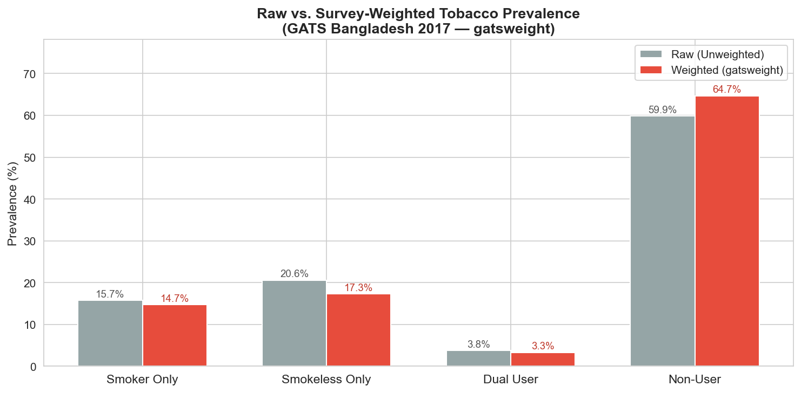
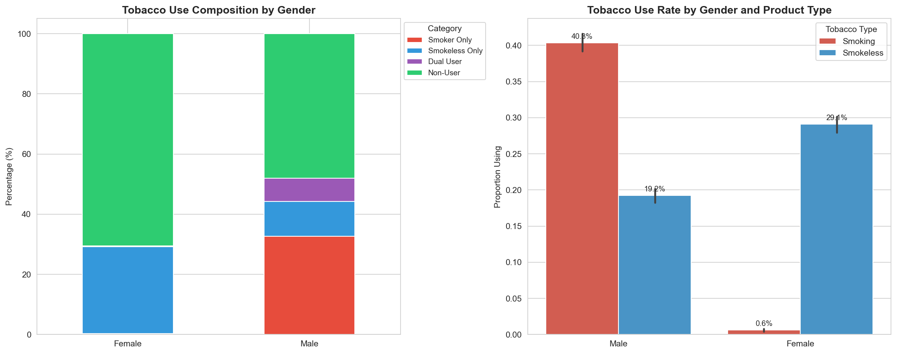
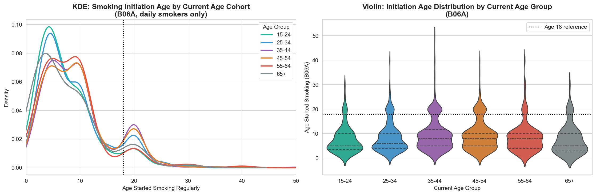
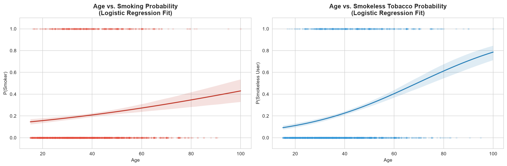
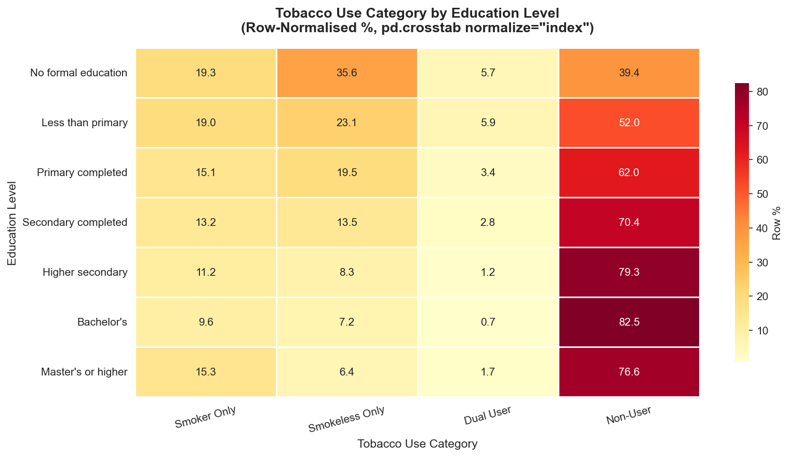
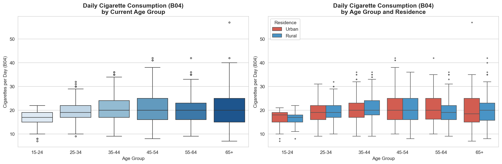
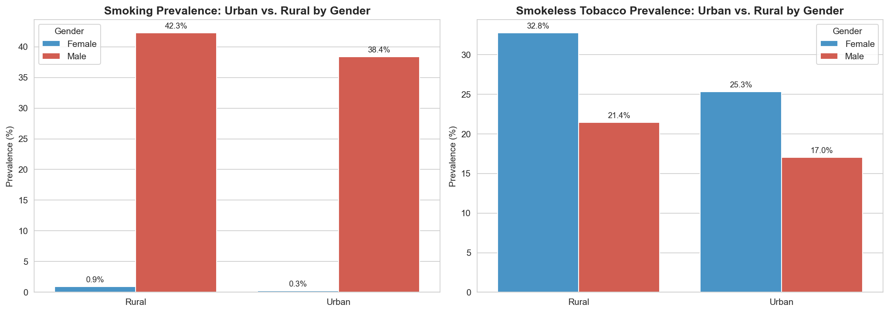
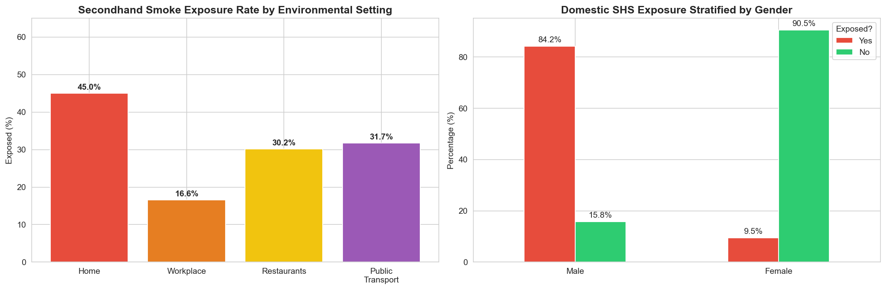
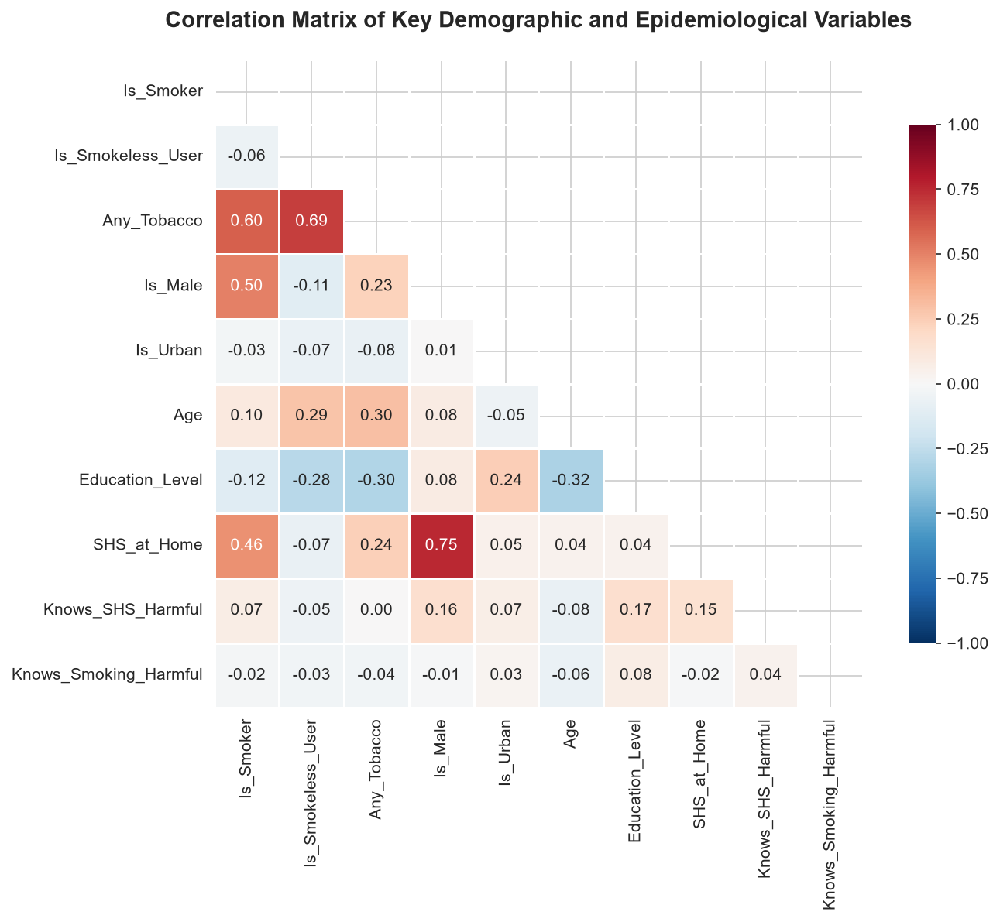
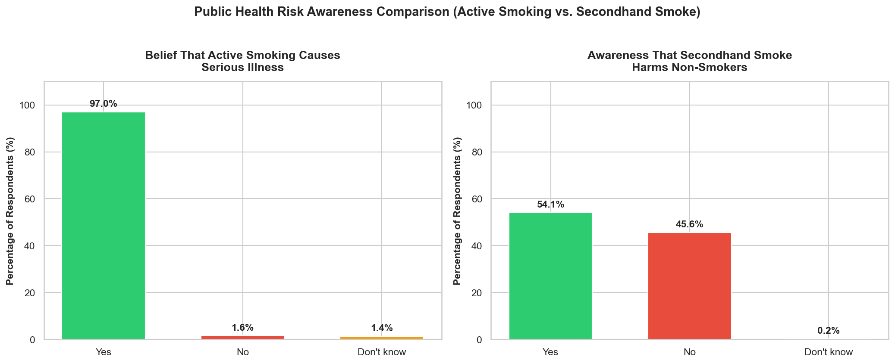
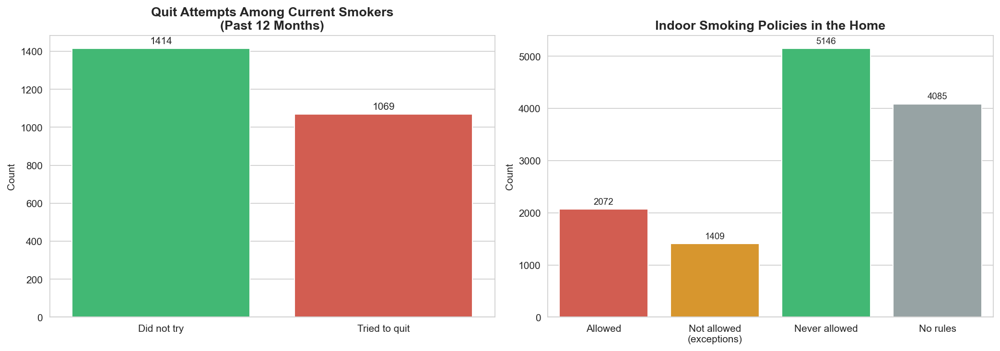
Raise taxes on smokeless tobacco and bidis to match cigarettes.
Run anti-smokeless campaigns specifically for women and rural areas.
Strictly fine smoking in public transport and restaurants.
Bangladesh has two separate tobacco problems: smoking for men and smokeless for women.
We need targeted solutions for both to improve public health.